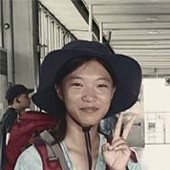
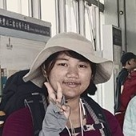

許筠沂
一直都有環島的想法，但當初覺得不繼實際，後來因為聽到兆瑋老師的的環島講座又重新燃環島的想法，就發現樂也有這個想法，就開始著手規劃。

陳得樂
一直都有環島的想法，但當初覺得不繼實際，後來因為聽到兆瑋老師的的環島講座又重新燃環島的想法，就發現樂也有這個想法，就開始著手規劃。
何昀柔
一直都有環島的想法，但當初覺得不繼實際，後來因為聽到兆瑋老師的的環島講座又重新燃環島的想法，就發現樂也有這個想法，就開始著手規劃。
陳思華
一直都有環島的想法，但當初覺得不繼實際，後來因為聽到兆瑋老師的的環島講座又重新燃環島的想法，就發現樂也有這個想法，就開始著手規劃。